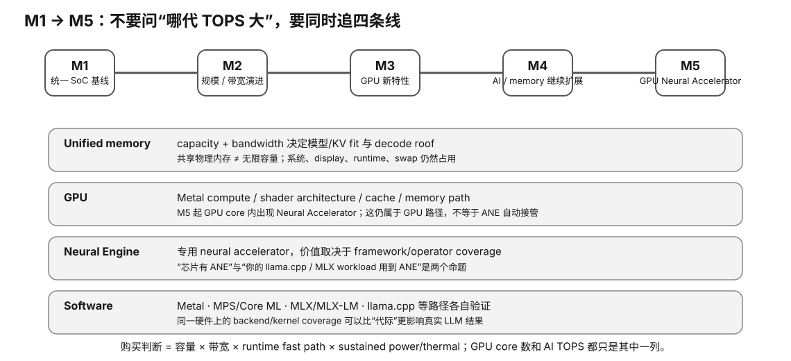
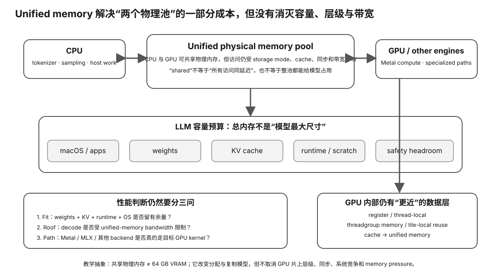

Apple Silicon · 1/3 · L0→L1
Apple Silicon（一）：Unified Memory 不是“超大显存”
Apple Silicon 最容易被本地 LLM 玩家误读的就是 unified memory。它确实允许 CPU 与 GPU 在同一统一内存体系中访问数据，减少传统独显的显式复制，但它不等于“全部内存都能无代价当显存”，更不等于“容量够就一定快”。

Prerequisite Check
你应知道传统独显通常有主机 RAM 与 GPU VRAM 两个物理内存域，CPU↔GPU 之间的数据移动可能经过 PCIe/驱动管理。
真实问题：一台 64 GB Mac 是否等于“一张 64 GB 显存 GPU”？
不能这样等同。64 GB unified memory 是整台 SoC 的共享内存资源，CPU、GPU、系统服务、应用、文件 cache 等都要使用。模型可用空间取决于系统保留、当前进程、runtime 策略与 memory pressure。
1. 传统独显：两个物理内存域
CPU ↔ system RAM | PCIe / driver transfer | GPU ↔ VRAM
当 CPU 准备的数据需要 GPU 使用时，很多 API/运行时必须显式或隐式地创建 device allocation 并搬运。大模型加载、activation 或频繁 host-device 往返都可能因此产生额外时间/内存副本。
2. Apple unified memory：共享物理内存不等于没有层级
unified memory pool
↙ ↓ ↘
CPU GPU Neural/other engines
Apple Silicon 把 CPU/GPU 等组件放在高带宽统一内存架构中。对程序的价值是减少许多传统 discrete GPU 必须显式复制的场景，并让 CPU/GPU 更容易共享同一份数据。

3. “模型能放下”应该怎么算？
不要用：
model file size < total unified memory → PASS
更合理的是预算：
usable headroom ≈ total unified memory - macOS + background apps - runtime/code/buffers - model weights - KV cache - temporary activations / scratch - safety margin
模型文件大小只是权重的一部分。上下文增长会增加 KV；并发 session 会增加额外工作集；部分框架还会创建临时 buffer。
4. Memory bandwidth：Apple Silicon 为什么在某些本地 LLM workload 很有吸引力？
部分高端 Apple SoC 提供较宽的统一内存带宽。对于小 batch autoregressive decode，如果需要持续流式读取大量权重，bandwidth 对 token/s 很重要。
但同样要避免“带宽除模型大小 = 实测 token/s”的过度简化。真实路径还包含：
- cache hit / effective bytes；
- quant dequant 与 matrix/vector compute；
- kernel fusion；
- CPU tokenizer/sampling；
- runtime scheduling；
- thermal/power behavior。
5. Swap 为什么是危险信号，而不是“免费扩容”？
macOS 可以把内存页换到 SSD，但大模型推理若严重依赖 swap，延迟和 SSD 写入都会明显恶化。swap 能避免某些瞬时 OOM，不等于把 32 GB Mac 变成 64 GB 高速统一内存。
判断时区分：
- 轻微 swap：系统后台行为，未必直接破坏 workload；
- 持续高 memory pressure + 大量 swap：说明模型/上下文/并发超出舒适工作集；
- OOM/进程被杀：hard failure。
6. Unified memory 与“zero-copy”营销词怎么读？
zero-copy 通常意味着避免某类显式数据副本，不代表所有访问路径零成本。CPU/GPU cache、同步、资源状态和访问模式仍会产生代价。阅读框架文档时要问：避免的是哪一次 copy？数据由谁生产/消费？是否需要 synchronization？
Worked Example：32 GB vs 64 GB Apple Silicon
假设某量化模型权重 22 GB，目标长上下文还需要数 GB KV，加上系统/runtime/safety margin：
- 32 GB 机器可能“勉强加载”但 memory pressure 高，甚至需要缩短上下文；
- 64 GB 机器更容易保留 headroom，并能提高上下文或并发；
- 这不代表 64 GB 型号 token/s 自动是 32 GB 的两倍——容量与带宽/计算是不同维度。
Why it matters
- Apple 机器购买往往在下单时就固定内存，容量选择几乎不可后期升级。
- 统一内存让大模型 fit 逻辑与独显不同，但仍要做完整 budget。
- “能加载”与“舒适运行”之间需要 safety margin。
- swap 可以掩盖容量不足，却带来性能/SSD 成本。
- 对 bandwidth-bound decode，内存带宽仍是关键规格，但必须实测。
常见误区
- “64 GB unified memory = 64 GB VRAM”——共享 pool 由整个系统共同使用。
- “统一内存没有数据移动成本”——减少显式 copy，不消除所有数据访问/同步成本。
- “只要模型文件能放下就行”——还有 KV、buffer、OS、headroom。
- “swap 可以替代买更大内存”——它是慢速后备，不是等价容量。
- “带宽高就一定 token/s 高”——kernel/compute/runtime 仍参与。
小实验与预期观察
用课程 worksheet 做三档模型预算：短上下文单用户、长上下文单用户、两路并发。先不运行模型，只计算权重 + KV + 系统/运行时余量。预期你会看到总内存不是“模型最大尺寸”的同义词。
有 Mac 时再观察 Activity Monitor / memory pressure 与 runtime 的实际 allocation。不要把某一次系统闲置时的 free memory 当永久可用容量。
无 Apple 硬件路径
L0 用预算表即可完成。课程不会要求为了验证 UMA 购买 Mac。后续真实学习阶段再在手头机器上采样 memory pressure、加载时间和 token/s。
排错
- 模型加载后系统卡顿：检查 memory pressure、swap、并发和 context。
- 明明总内存够却 allocation 失败：确认 runtime 的 GPU memory policy/限制与其他进程占用。
- 速度突然下降：同时检查 thermal、memory pressure、swap，不只看 GPU utilization。
Retrieval Practice
- 为什么 unified memory 不能直接等同同容量 VRAM？
- 列出模型文件之外至少四类内存开销。
- 统一内存减少了哪类传统 discrete GPU 成本？哪些成本仍存在？
- 为什么 swap 是容量压力证据而不是免费扩容？
- 容量翻倍为什么不意味着 token/s 翻倍？
- 购买不可升级内存的 Mac 时，为什么 safety margin 比“刚好能放下”更重要？
Decision Rule
Apple Silicon 先按整机 unified-memory budget 做 fit，再比较 bandwidth/compute/runtime。不能把总内存直接写成“VRAM”，也不能用“能加载”替代长上下文、并发与 memory-pressure 验证。
Transfer
把这个思维迁移到 APU、共享内存 iGPU、AMD MI300A 等系统时，同样区分：物理共享、地址可见性、带宽、系统竞争、软件分配策略。下一节会进入 Apple GPU/Metal 的执行模型。
完成证据
完成本课后，保留一份 learner-owned completion artifact，至少包含：
- 用自己的话画出或写出本节最小 mental model，并标出关键变量/资源层；
- 完成本节小实验、worksheet 或无硬件 fallback；有真机时链接 raw Evidence，没有真机时明确标 L0 / DOCUMENTED / DEFERRED-HARDWARE；
- 写一条绑定 Evidence 的 PASS / FAIL / UNKNOWN / BLOCKED 结论，说明它怎样影响本地 LLM 的容量、性能、兼容、成本或风险判断；
- 写一句明确 non-claim：这份证据还不能证明什么。
只写“看完了”或抄规格表不算完成。课程要的是可复查的推理产物，而不是阅读打卡。